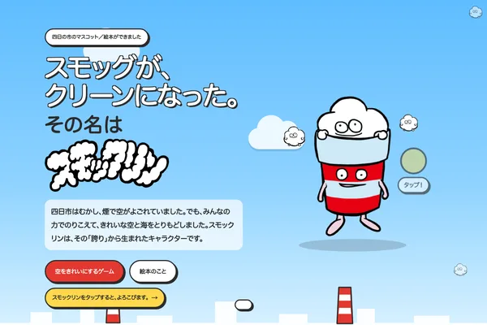
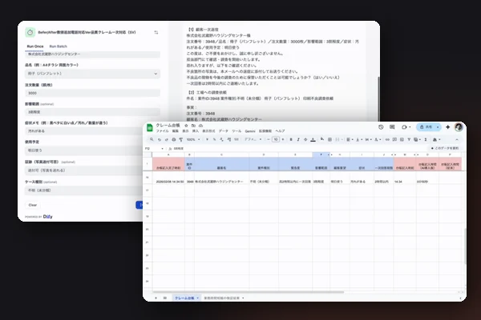
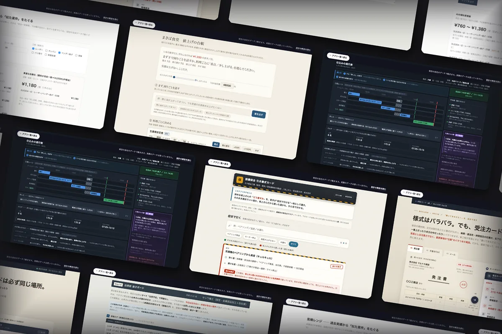
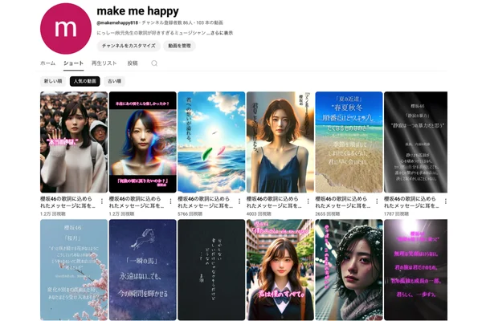
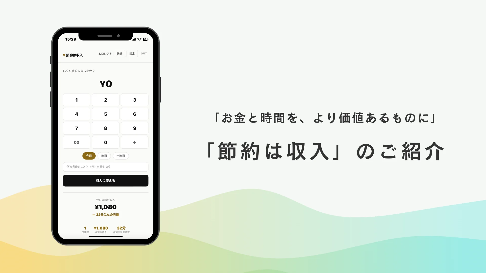
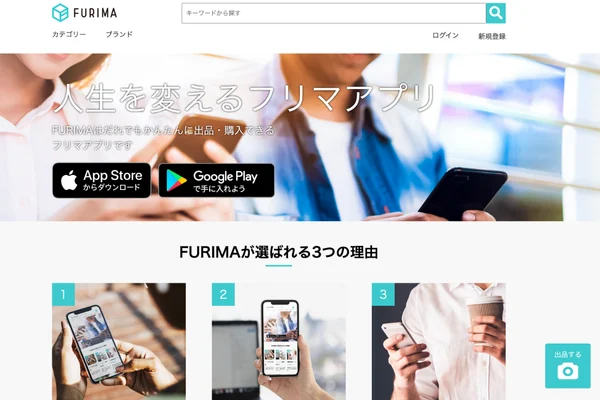
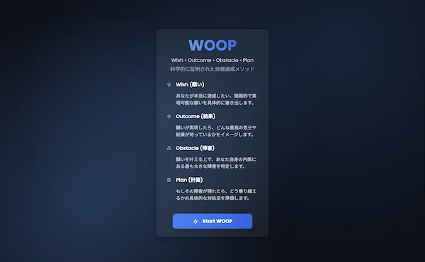
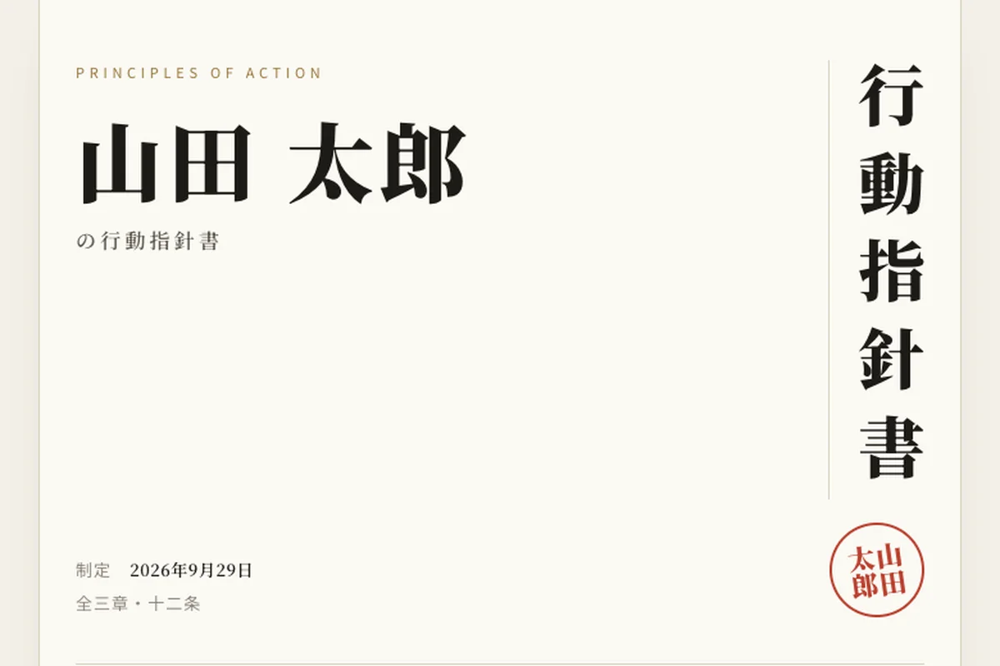
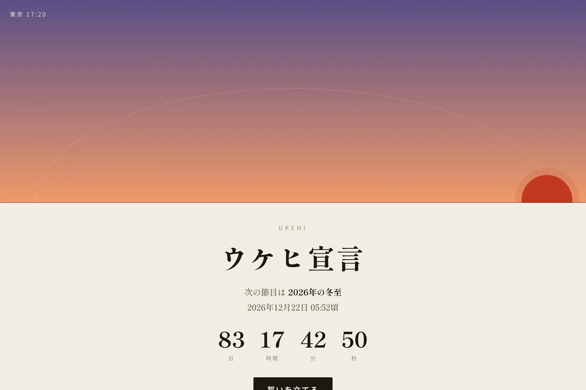
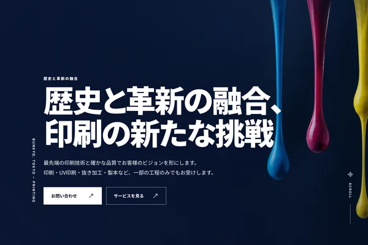

LiveScrollTokyo, JP
01Selected
Selected
works個人で作ってきたものです。公開中のものは、このページからそのまま開けます。

Award
Live
Live
Beta
Paused
Live
Live
Live
Live02
Aboutこれまでの歩み
仕事の始まりは、ステージで歌うことでした。製造の現場では二十年、受注・見積・段取りを担当しました。映像制作の会社も立ち上げ、いまはAIを使って自分でアプリを作っています。作ってきたものに共通するのは、「あの人しかできない」をほどくことです。
名前について
- Hiro
- 浩。広々とした心。
- Shift
- 変化と成長。柔らかく、しなやかに変わっていく姿勢。
- ≈
- ほぼ等しい。「守ること」と「変わること」は、本質的には同じだという考え。
夢中でいられる自分を守るために、変わる。
- 1997音楽
新人発掘オーディションでグランプリ。ビクターエンタテインメントからメジャーデビュー。全国ツアーとラジオのパーソナリティ。
- 2003製造業の現場
受注・見積・段取り・納期。年間800件規模の案件進行を、20年以上統括。
- 2017映像
映像制作の会社を設立（代表社員・現在は休業中）。企画・撮影・編集を自分の手で。
- 2025Hiroshift
自分の職場で、自分にしかできなかった仕事を、誰でも回せる形にし始める。テックキャンプでプログラミングを学び直す。
- 2026受賞
自社業務の AI エージェントで、AIカレッジの業務効率化アプリコンテスト 優秀作品賞。
Claude CodeCodexGeminiDifyPythonJavaScriptRuby on RailsGASWebGLBlenderFigmaFirebaseMySQL / PostgreSQLAWS
03
Servicesできること
01Fast
AI駆動開発
お話を伺ったら、仕様書より先に動く画面を作ります。実際に触ってもらいながら直して、仕様を決めていきます。
02End to end
Web アプリ開発
企画・設計・実装から、運用開始まで担当します。ブラウザだけで動く構成が得意です。
03Craft
Web サイト制作
ポートフォリオやLPなど、目的に合わせて1ページから作ります。このページも、フレームワークを使わずHTMLとWebGLで書いています。